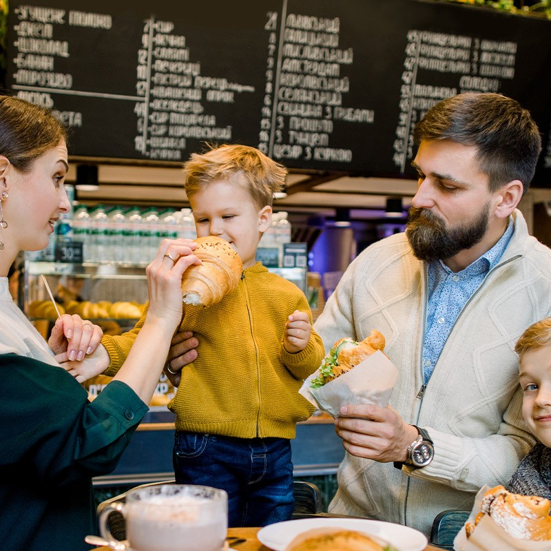

Founded in 2010, Gourmet Haven began as a small family restaurant with a passion for creating exceptional dining experiences. Our founders, the Rossi family, brought recipes from their Italian heritage and combined them with local ingredients to create a unique culinary experience.
Over the years, we've grown from a cozy 30-seat establishment to the award-winning restaurant we are today, but our commitment to quality, hospitality, and authentic flavors has never wavered.
We believe that dining is not just about nourishment, but about creating memories, celebrating relationships, and experiencing the artistry of food.
